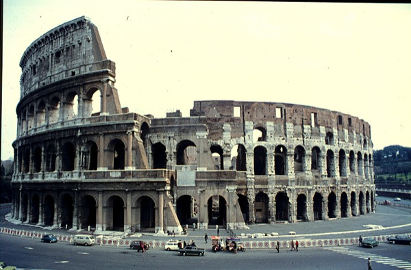

Colosseum as Traffic Circle

The Flavian Ampitheatre otherwise known as the Colosseum, in the 1960s disguised as a traffic circle. From this website.
Fortunately or unfortunately, my head is so full of the Colosseum that I can’t think of anything else to write about but the Colosseum. As I’ve been sorting through images of the Colosseum, I came across the above, which I find very funny. Perhaps it was a good idea, to turn the Colosseum into a traffic circle, for it is an ideal shape to drive round and round. Though I can’t help but to think of Mussolini laughing to himself as he seriously worked out the urban planning on this one. (I also like the photograph for the cars and color.)
· · · · · · · · · · · · · · · · · · · ·